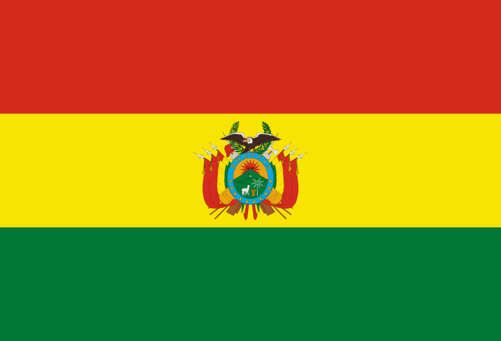
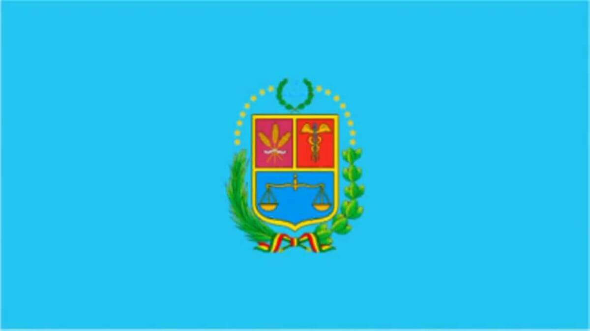

About Me
Hey, this is Samuel I was born and raised in Bolivia, and in 2019 I went to the United States where I spent two years learning English as well as gaining valuable experience in customer-facing roles. In 2021 I returned to Bolivia where I am focusing on my passion for technology🙌🏼
Cochabamba, Bolivia

Bolivia
Cochabamba is one of the most beautiful cities in Bolivia, found in the heart of the country, it is also called "the city of eternal spring" due to its weather.

Cochabamba